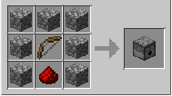
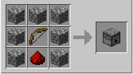

O que é a Redstone?
A Redstone é um dos recursos mais importantes e complexos do Minecraft. Ela funciona como uma forma de circuito elétrico que pode transmitir sinais de energia para ativar ou desativar macanismos no jogo. Com ela, jogadores conseguem criar desde sistemas simples (como abrir uma porta com botão) até computadores inteiros dentro do jogo.
Como obter Redstone?

- Minerando minério de Redstone, encontrado a partir da camada Y = -64 até 16.
- Quebrado com picareta de ferro ou superior.
- Cada bloco pode dropa até 5 pós de Redstone (com Fortuna, mais)
Propriedades da Redstone
- Sinal: quando energizada, a Redstone emite sinal que pode ser transmitido até 15 blocos de distância.
- Intensidade: cada bloco percorrido diminui a força em 1.
- Transmissão: pode ser feita por fios, tochas, blocos condutores, repetidores, comparadores, etc.
- Ativadores comuns: alavancas, botões, placas de pressão, ganchos de armadilha, sensores de luz solar.
- Receptores comuns: portas, pistões, trilhos elétricos, lâmpadas de Redstone, dispensadores, ejetores, sinos, etc.


 
